Differential Privacy for Statistics and ML: Guarantees, Trade-offs, and Limits
Outline
- Inroduction to Differential Privacy
- Design: Privacy-Utility Trade-offs
- Evaluation: Privacy Attacks and Auditing
- Limiations and Future Directions
Inroduction to Differential Privacy
Privacy-Preserving Data Analysis
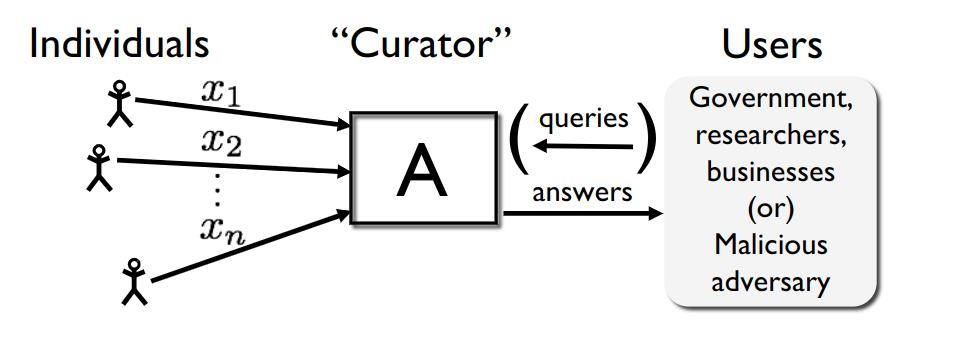
Large collection of personal data:
- Census
- Public Health
- Social Networks
- Summary statistics
- Training machine learning models
- Synthetic data
- Answering queries accurately about the population
- Individual information stays hidden
First Attempt: Remove Obvious identifiers
- Pseudo-identifiers (ZIP code + gender + birth charachteriese 87% of Americans)
- Access to external information sources
Second Attempt: Publish aggregate statistics
Problem: Too many accurate statistics $\rightarrow$ data reconstruction
Differential Privacy (DP) [1]
A promise from a data analyst to data subjects that:
"Same conclusions will essentially be reached, independent of whether any data subject opts into or out of the data set."
-
[1] C.Dwork, F.McSherry, K.Nissim, A.Smith.
Calibrating noise to sensitivity in private data analysis
(TCC 2006).
Differential Privacy (DP)
.png)
Differential Privacy (DP) [1]
Intuition: Indistinguishability from the mass
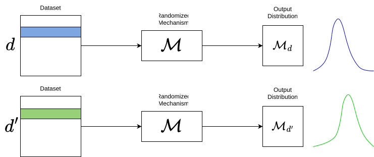
$\mathcal{M}$ is $\color{blue}{\epsilon}$-DP if $$ \forall d\sim d', \, \forall E\in \mathcal{O}, \, \mathcal{M}_{d}(E) \leq e^{\color{blue}{\epsilon}} \mathcal{M}_{d'}(E) $$
$\color{blue}{\epsilon}$: Privacy budget
-
[1] C.Dwork, F.McSherry, K.Nissim, A.Smith.
Calibrating noise to sensitivity in private data analysis
(TCC 2006).
Comments on the DP definition
$$ \forall d\sim d', \, \forall E\in \mathcal{O}, \, e^{\color{blue}{-\epsilon}} \mathcal{M}_{d'}(E) \leq \mathcal{M}_{d}(E) \leq e^{\color{blue}{\epsilon}} \mathcal{M}_{d'}(E) $$
- Smaller the privacy budget $\color{blue}{\epsilon}$, higher the privacy
-
A worst-case guarantee:
- Every possible neighbours (even very unlikely ones)
- All possible outputs (even very unlikely ones)
- This is a specific notion of closeness between $\mathcal{M}_d$ and $\mathcal{M}_{d'}$, i.e. $\sup_{d \sim d'} \mathrm{D}_\infty (\mathcal{M}_d, \mathcal{M}_{d'}) \leq \epsilon$, $$ \mathrm{D}_\infty (P, Q) = \max_{x \in \mathrm{Supp}(Q)} \log \frac{P(x)}{Q(x)} $$ or using group privacy $$ \forall d, d': \quad \mathrm{D}_\infty (\mathcal{M}_d, \mathcal{M}_{d'}) \leq \epsilon \, \textrm{Dham}(d, d')$$
Comments on the DP definition
-
Protects against an adversary, with unlimited compute power and auxiliary information:
$H_0$: The output was generated from $d$
vs
$H_1$: The output was generated from $d'$
Any test $\Leftrightarrow$ a regection region $S \subset \mathcal{O}$
Let $\alpha = \mathcal{M}_d(S)$ type I error, $\beta = \mathcal{M}_{d'}(\bar S)$ type II error, $\epsilon$-DP is equivalent to:
$\alpha + e^\color{blue}{\epsilon} \beta \geq 1$ and $\beta + e^\color{blue}{\epsilon} \alpha \geq 1$
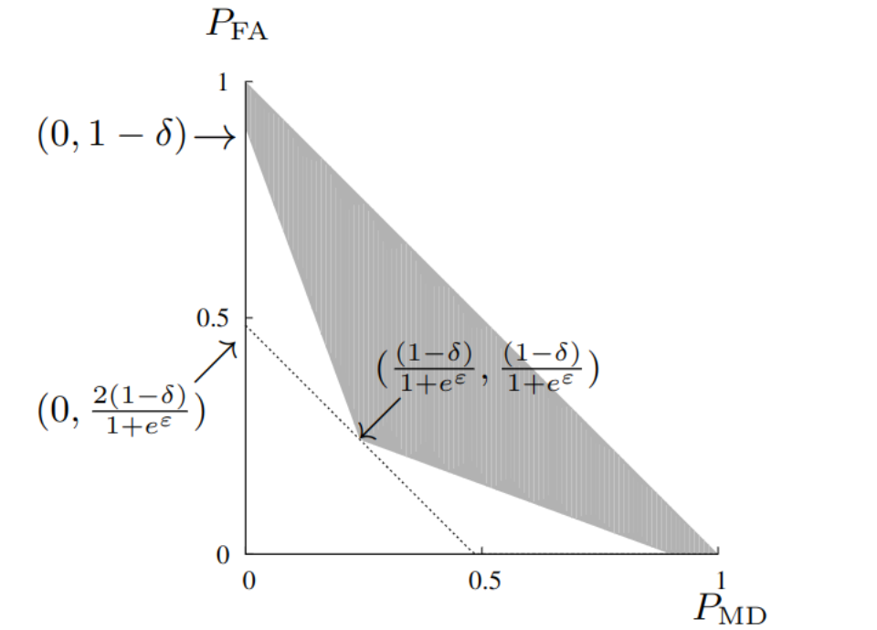
Properties of DP
Post-Processing. If $\mathcal{M}$ is $\color{blue}{\epsilon}$-DP, and $\mathcal{F}$ is an arbitrary randomised mapping, then
$\mathcal{F}o\mathcal{M}$ is $\color{blue}{\epsilon}$-DP
Group privacy. If $\mathcal{M}$ is $\color{blue}{\epsilon}$-DP, $d$ and $d'$ differ in $\color{red}{k}$ elements, then $$ \forall E \in \mathcal{O}, \, \mathcal{M}_d(E) \leq e^{\color{red}{k} \color{blue}{\epsilon}} \mathcal{M}_{d'}(E) $$
Basic composition. If $\mathcal{M} = (\mathcal{M}_1, \dots, \mathcal{M}_T)$ is a mechanism where each $\mathcal{M}_t$ is $\color{blue}{\epsilon}_t$-DP then
$\mathcal{M}$ is $\left(\sum_{t= 1}^T \color{blue}{\epsilon}_t \right)$-DP
Achieving DP
The Laplace Mechanism
Let $f: \mathcal{X}^n \rightarrow \mathbb{R}^d$ be a deterministic function.
Definition. The L1 sensitivity of $f$ is $$s_1(f) = \max\limits_{d \sim d'} \left \| f(d) - f(d') \right \|_1 $$
Theorem. Let $Y_i \sim^{\text{iid}} \mathrm{Lap}\left(\frac{s_1(f)}{\color{blue}{\epsilon}}\right)$. Then $$\mathcal{M}: x \rightarrow f(x) + (Y_1, \dots, Y_d)$$ is $\color{blue}{\epsilon}$-DP
Approximate DP
$\mathcal{M}$ is $(\epsilon, \delta)$-DP if $$ \forall d\sim d', \, \forall E\in \mathcal{O}, \, \mathcal{M}_{d}(E) \leq e^{\color{blue}{\epsilon}} \mathcal{M}_{d'}(E) + \delta $$
$\mathcal{M}$ is $\rho$-zero Concentrated DP if $$ \forall d\sim d', \, \forall \alpha > 1, \, \mathrm{D}_\alpha ( \mathcal{M}_{d}, \mathcal{M}_{d'}) \leq \alpha \rho $$
where $\mathrm{D}_\alpha(P, Q) = \frac{1}{\alpha - 1} \log \mathbb{E}_Q \left[ \left( \frac{dP}{dQ} \right)^\alpha \right] $
Design: Privacy-Utility Trade-offs
Privacy-Preserving Data Analysis
Main goal: Publish $\epsilon$-DP statistics, with the highest "utility" Three tasks:
- Publishing the empirical mean
- Publishing the weights of a model, trained by SGD
- Publishing the sequence of recommended actions
The Empirical Mean
- The mechanism: $$\left.\begin{matrix} x_1 \\ x_2 \\ .\\ . \\ x_n\\ \end{matrix}\right\} \xrightarrow{\mathcal{M}^\mathrm{emp}}\hat\mu_n \triangleq \frac{1}{n} \sum_{i = 1}^n x_i \in \mathbb{R} $$ Boundness assumption: all $x_i \in [0,1]$
Privacy. $\tilde{\mu}_n \triangleq \frac{1}{n} \sum_{i=1}^{n}x_i + \mathrm{Lap}\left ( \frac{1}{\epsilon n} \right)$ is $\epsilon$-DP
Utility. If $X_i \sim^{\text{i.i.d}} P$, with mean $\mu$ then $\left | \tilde{\mu}_n - \mu \right | \leq \mathcal{O}\left(\frac{1}{\sqrt{n}} + \color{blue}{\frac{1}{\epsilon n}}\right)$
Training a Model: Empirical Risk Minimization
Main goal: release an $(\epsilon, \delta)$- DP model $\tilde\theta_n$ such that $$ L(\tilde\theta_n)-L(\theta^\star) \quad\text{is small,} \qquad L(\theta)=\mathbb E_{Z\sim P}[\ell(\theta;Z)]. $$
Main idea. Add noise to the gradients.
DP Gradient Descent / DP-SGD
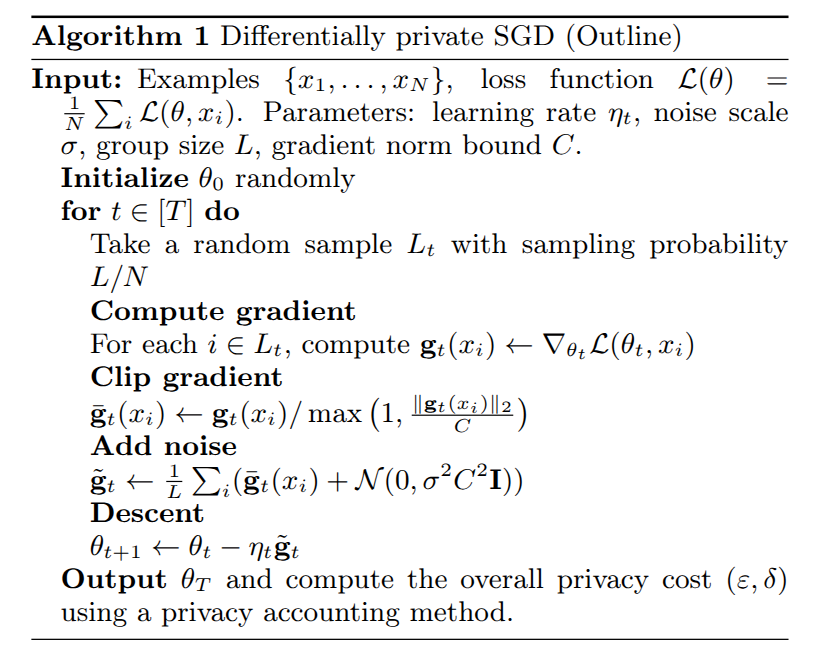
Convex theory: assume $\ell(\cdot;z)$ is $G$-Lipschitz and $\Delta$-strongly convex.
Utility. $(\epsilon, \delta)$-DP GD achieves, up to logarithmic factors, $$ \mathbb E\!\left[L(\tilde\theta)-L(\theta^\star)\right] \lesssim \frac{G^2}{\Delta n} + \color{blue}{ \frac{G^2 d\log(1/\delta)}{\Delta \epsilon^2 n^2} }. $$
Multi-armed Bandits
- Learner interacts with an unknown environment
- Goal: maximize rewards
Example: Clinical trials [1]
For the $t$-th patient
- Doctor chooses medicine $a_t \in \{1, \dots, K\}$
- If Patient $t$ is cured $r_t = 1$, otherwise $r_t = 0$
-
[1] W. R. Thompson.
On the likelihood that one unknown probability exceeds another in view of the evidence of two samples
(Biometrika 1933).
Table DP
Definition: $\pi$ satisfies $\epsilon$-DP if $\mathcal{M}^\pi$ is $\epsilon$-DP
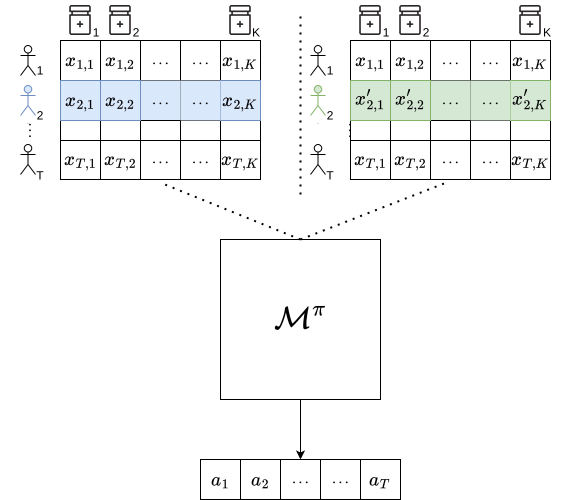
UCB Algorithm
Act optimistically
At each step $t$, chose the action with highest upper confidence bound:
$$ a_t \in \mathrm{argmax}_{a \in [K]} \mathrm{UCB}_a(t, \delta) $$
where $$ \mathrm{UCB}_a(t, \delta) \triangleq \hat \mu_a(t) + \sqrt{\frac{\log(1/\delta)}{2 N_a(t)}} $$ Theorem. For rewards in $[0,1]$, for a horizon $T$ and $\delta = 1/T^2$ $$ \mathrm{Reg}_T(\mathrm{UCB}) \triangleq T \mu^\star-\mathbb{E} \left[\sum_{t=1}^{T} r_{t}\right] \leq \tilde{O}(\sqrt{KT}) $$
AdaP-UCB[$\ast$]
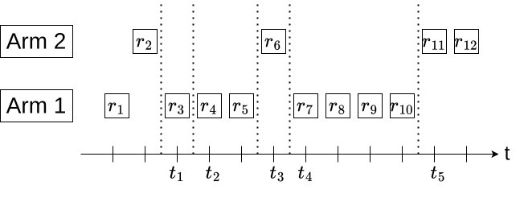
- Compute $A_{\ell} = \operatorname{argmax}_{a} \color{blue}{\operatorname{AdaP-UCB}_{a}^{\epsilon}}(t_{\ell} )$
- Choose arm $A_{\ell}$ until round t such that $N_{A_\ell}(t) = 2N_{A_\ell}(t_{\ell} - 1)$
- Update $\color{blue}{\operatorname{AdaP-UCB}}$ using only reward samples from the last episode
$$\color{blue}{\operatorname{AdaP-UCB}_{a}^{\epsilon}}(t_{\ell} ) \triangleq \underset{\text{Non-private index}}{\underbrace{\hat{\mu}_{a}^{\ell} + \sqrt{ \frac{ \log(t_{\ell})}{ 2\times \frac{1}{2} N_a(t_\ell) } }}} + \underset{\text{Laplace noise}}{\underbrace{\mathrm{Lap} \left( \frac{1}{\epsilon \times \frac{1}{2} N_a(t_\ell)} \right)}} + \underset{\text{Privacy bonus}}{\underbrace{\frac{ \log( t_{\ell})}{ \epsilon \times \frac{1}{2} N_a(t_\ell )} }}$$ Theorem. AdaP-UCB is $\epsilon$-DP for rewards in $[0,1]$ and achieves $$ \mathrm{Reg}_{T}(\mathsf{AdaP\text{-}UCB}) \leq \tilde{O} \left(\sqrt{KT} + \color{blue}{\frac{K \log(T)}{\epsilon}} \right) $$ [$\ast$] A. Azize, D. Basu. When Privacy Meets Partial Information: A Refined Analysis of Differentially Private Bandits (NeurIPS 2022).
Evaluation: Privacy Attacks and Auditing
Differential Privacy
Privacy Auditing: How to certify privacy/estimate the privacy budget?
Privacy Auditing
using Membership Attacks
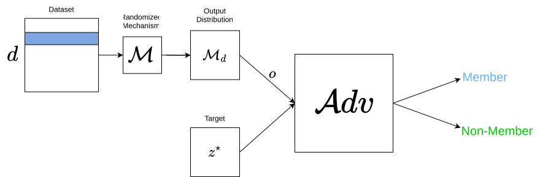
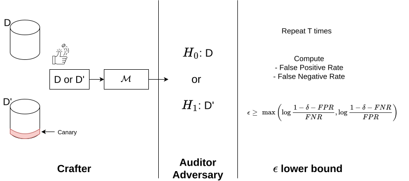
Main Questions: How to design canaries? How to design optimal attacks?
The Membership Inference Game
A game between:
- A crafter $\mathcal{C}$: entity with access to the input dataset and the mechanism $\mathcal{M}$
- An adversary $\mathcal{A}_{z^\star}$: tries to determine whether $z^\star$ is in the input dataset
The crafter $\mathcal{C}$:
- Input: $\mathcal{M}$, $n$ and $z^\star$, distribution $\mathcal{D}$
- Builds dataset $D \sim \bigotimes_{i = 1}^n \mathcal{D}$
- Sample $b \sim \mathrm{Ber}\left ( 1/2 \right)$
- If $b = 1$:
- Include $z^\star$ in $D$ at a random position
- Sample $o \sim \mathcal{M}(D)$
- Output: $(o, b)$
- Input: $o \in \mathcal{O}$
- Output: $\hat{b} \sim \mathcal{A}_{z^\star}(o)$, where $\hat{b} \in \{0,1\}$
- Input: crafter $\mathcal{C}$, adversary $\mathcal{A}_{z^\star}$, number of rounds $T$
- For $t = 1, \dots, T$:
- Sample $(o_t, b_t) \sim \mathcal{C}(\mathcal{M}, n, z^\star, \mathcal{D})$
- $\hat{b}_t \sim \mathcal{A}_{z^\star}(o_t)$
- Output: $\left\{ \mathbb{1} \left( b_t = \hat{b}_t \right) \right\}_{t = 1}^T$
Performance Metrics
- The advantage is a recentred accuracy: $$\mathrm{Adv}(\mathcal{A}_{z^\star}) \triangleq 2 \mathrm{Pr} [\mathcal{A}_{z^\star}(o) = b ] - 1$$
- The power under significance $\alpha$ is the max TPR at FPR $\alpha$: $$ \mathrm{Pow}(s, \alpha) \triangleq \max_{\tau \in T_\alpha} \mathrm{Pr} \left[s(o, z^\star) \geq \tau \mid b = 1\right] $$ for $\mathcal{A}_{s, \tau, z^\star}(o) = \mathbb{1} \left( \underset{\text{score}}{\underbrace{s(o, z^\star)}} \geq \tau \right)$ where $$T_\alpha \triangleq \left \{ \tau \in \mathbb{R}: \mathrm{Pr} \left[s(o, z^\star) \geq \tau \mid b = 0 \right] \leq \alpha \right \}$$
Optimal Adversary
The Neyman-Pearson Lemma
MIG can be seen as a hypothesis test:
- Under $H_0$, $z^\star$ was "not included", $o \sim p^\mathrm{out}(o \mid z^\star)$
- Under $H_1$, $z^\star$ was "included", $o \sim p^\mathrm{in}(o \mid z^\star)$
Then, the log-likelihood ratio score is: $$ \ell(o; z^\star) \triangleq \log\left( \frac{p^\mathrm{in}(o \mid z^\star)}{p^\mathrm{out}(o \mid z^\star)} \right) $$ The LR-based attacker is: $$\mathcal{A}_{\ell, \tau, z^\star}(o) = \mathbb{1} \left(\ell(o; z^\star) \geq \tau\right)$$ The Bayes attacker is $\mathcal{A}_{\mathrm{Bayes}, z^\star} \triangleq \mathcal{A}_{\ell, 0, z^\star}$.
Leakage by the Optimal Attacker
Theorem.
- $ \forall$ adversary $\mathcal{A}_{z^\star}$: $$ \mathrm{Adv}(\mathcal{A}_{z^\star}) \leq \mathrm{Adv}(\mathcal{A}_{\mathrm{Bayes}, z^\star}) = \mathrm{TV} \left(p^\mathrm{out}(. \mid z^\star), p^\mathrm{in}(. \mid z^\star)\right)$$
- $ \forall$ score $s$, $\forall \alpha \in [0,1]$: $$ \mathrm{Pow}(s, \alpha) \leq \mathrm{Pow}(\ell, \alpha)$$
Definition. The membership leakage of $z^\star$, for $\mathcal{M}$, under distribution $\mathcal{D}$ is $$ \begin{align} \xi(z^\star, \mathcal{M}, \mathcal{D}) &\triangleq \mathrm{Adv}(\mathcal{A}_{\mathrm{Bayes}, z^\star}) \\ &= \mathrm{TV} \left(p^\mathrm{out}(. \mid z^\star), p^\mathrm{in}(. \mid z^\star)\right) \end{align} $$
How to quantify $\xi(z^\star, \mathcal{M}, \mathcal{D})$?
The Empirical Mean
- The mechanism: $$\left.\begin{matrix} z_1 \in \mathbb{R}^d\\ z_2 \in \mathbb{R}^d\\ .\\ . \\ z_n \in \mathbb{R}^d\\ \end{matrix}\right\} \xrightarrow{\mathcal{M}^\mathrm{emp}}\hat\mu_n \triangleq \frac{1}{n} \sum_{i = 1}^n z_i \in \mathbb{R}^d $$
- Assumption on data-generating distribution $\mathcal{D}$:
- Column-wise independent $\mathcal{D} = \bigotimes_{j = 1}^d \mathcal{D}_j$
- Population mean $\mu = (\mu_1, \dots, \mu_d) \in \mathbb{R}^d$
- Covariance $C_\sigma = \mathrm{diag}(\sigma_1^2, \dots, \sigma_d^2) \in \mathbb{R}^{d\times d}$
- Finite 4-th moment
Main tool: Asymptotic normality, when both $n,d \rightarrow \infty$, such that $d/n = \tau$
Assymptotic distribution of the LR score
Theorem.[$\ast$] For any $\mathcal{D}$ with finite 4-th moment, as $d,n \rightarrow \infty$ s.t. $d/n = \tau$, we show
- Under $H_0$: $\ell_n(\hat{\mu}_n; z^\star, \mu, C_\sigma ) \rightsquigarrow \mathcal{N}\left(-\frac{1}{2} \color{blue}{m^\star}, \color{blue}{m^\star} \right)$
- Under $H_1$: $\ell_n(\hat{\mu}_n; z^\star, \mu, C_\sigma ) \rightsquigarrow \mathcal{N}\left(\frac{1}{2} \color{blue}{m^\star}, \color{blue}{m^\star} \right)$
$ \color{blue}{m^\star} \triangleq\lim_{n,d} \frac{1}{n} \| z^\star - \mu \|^2_{C_\sigma^{-1}} $
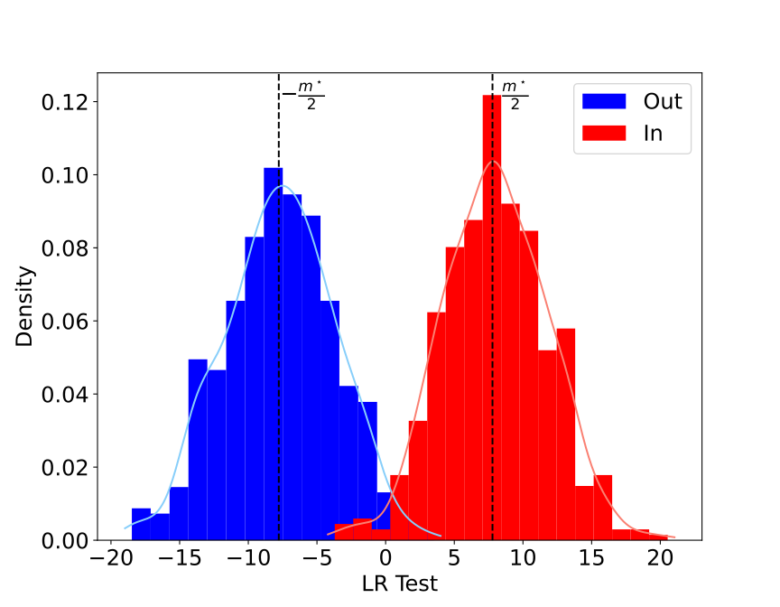
[$\ast$] A. Azize, D. Basu. Quantifying the target-dependent Membership Leakage (AISTATS 2025, oral).
Assymptotic distribution of the LR score
Proof main steps:
- Edgeworth Expansion of the LR test: $$\ell_n(\hat{\mu}_n; z^\star, \mu, C_\sigma) = (z^\star - \mu)^T C_\sigma^{-1}(\hat{\mu}_n - \mu) - \frac{1}{2n} \|z^\star - \mu\|^2_{C_\sigma^{-1}} + o_p(1)$$
- Lindeberg-Feller CLT to get the asymptotic distribution of the LR test
Membership Leakage of the Mean
Theorem.[$\ast$] The asymptotic leakage of $z^\star$ in the empirical mean is: $$\lim_{n,d} \xi_n(z^\star, \mathcal{M}^\mathrm{emp}_n, \mathcal{D}) = \Phi\left (\frac{\sqrt{\color{blue}{m^\star}}}{2}\right) - \Phi\left(-\frac{\sqrt{\color{blue}{m^\star}}}{2}\right)$$
The optimal asymptotic power under significance $\alpha$: $$\lim_{n,d} \mathrm{Pow}_n(\ell_n, \alpha, z^\star) = \Phi\left( \Phi^{-1}(\alpha) + \sqrt{\color{blue}{m^\star}}\right)$$
- $ \color{blue}{m^\star} \triangleq\lim_{n,d} \frac{1}{n} \| z^\star - \mu \|^2_{C_\sigma^{-1}} $
- $\Phi$ is the CDF of the standard normal distribution
Proof: Testing between Gaussians
[$\ast$] A. Azize, D. Basu. Quantifying the target-dependent Membership Leakage (AISTATS 2025, oral).
Membership Leakage in Different Settings
| Setting | Leakage Score |
|---|---|
| Empirical mean | $\frac{1}{n} \| z^\star - \mu \|_{C_\sigma^{-1}}^2$ |
| Gaussian Noise $(\gamma > 0)$ | $\frac{1}{n} \| z^\star - \mu \|_{(C_\sigma + C_{\gamma})^{-1}}^2$ |
| Sub-sampling $(\rho < 1)$ | $\frac{\rho}{n} \| z^\star - \mu \|_{C_\sigma^{-1}}^2$ |
| Target Misspecification | $\frac{1}{n} \left(z^\star_{\mathrm{targ}} - \mu\right)^T C_\sigma^{-1}\left(z^\star_{\mathrm{true}} - \mu \right)$ |
Simulations
$n = 1000$, $d=5000$
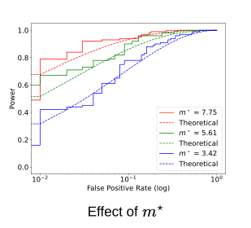
Beyond Empirical Mean
Gradient Descents in Federated Learning
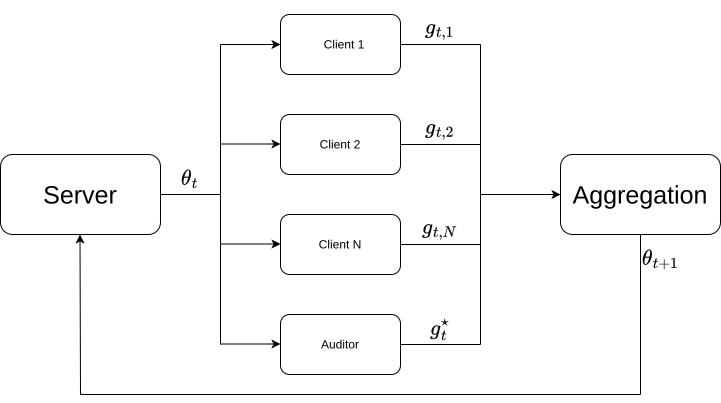
$$\theta_{t+1} = \theta_t - \eta_t \mathcal{M}(g_{t,1}, \dots, g_{t,1}, g^\star_t)$$- Choose $g^\star_t$ as the gradient with highest estimated $\|g^\star_t - \hat{\mu}^t_0\|^2_{(\hat{C}^t_0)^{-1}} $
- Use Covariance Attack to trace $g^\star_t$: $$(g^\star_t - \hat{\mu}^t_0)^T(\hat{C}^t_0)^{-1}\left( \frac{\theta_{t+1} - \theta_t}{\eta_t} - \hat{\mu}^t_0 \right) $$
Experiments
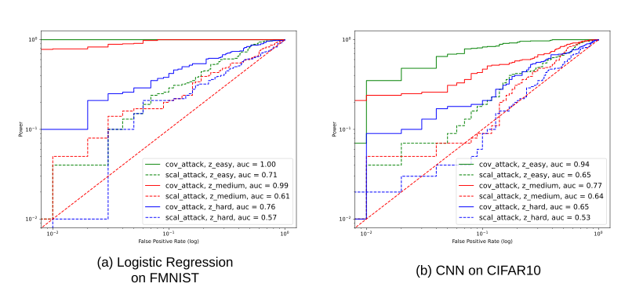
Limitations and Future Directions
Recap and Future Directions
Future directions: many tasks where the price of privacy is still not well-understood, e.g. problem dependent price, beyound bounded data, linear regression
Part 2: Privacy Attacks and Auditing
Future directions: optimal attacks and canary beyond empirical mean: Z-estimators, continually updated models
Limitations of DP
Some Problems with Differential Privacy:
- DP = defence against all Membership Inference attacks
- How to interpret $\epsilon$? How to set $\epsilon$ practically?
- DP = Privacy-utility trade-offs
Can we fix these issues OR do we need a new paradigm ?
Thank you!
Appendix
View DP
Definition: $\pi$ satisfies $\epsilon$-View DP if $\mathcal{V}^\pi$ is $\epsilon$-DP
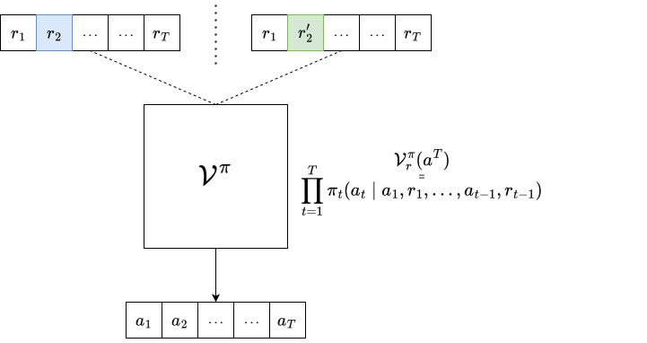
Interactive DP
 Let $b \in \{L, R\}$ and $t^\star \in \{1, \dots, T\}$.
Let $b \in \{L, R\}$ and $t^\star \in \{1, \dots, T\}$.
For $t=1,\dots, T$:
- The policy $\pi$ selects an action $$a_t \sim \pi_t(\cdot \mid a_1, r_{1}, \dots, a_{t - 1}, r_{t-1}), \, a_t \in [K]$$
- The adversary $\mathcal{A}$ selects an adaptively chosen pair of rewards:
$$ (r_t^L, r_t^R) = \mathcal{A}_t(a_1, \dots, a_t)$$
- If $t \neq t^\star$: $$ r_t = r_t^L $$
- If $t = t^\star$: $$ r_{t^\star} = r_{t^\star}^b$$
- The policy $\pi$ observes the reward $r_t$
A policy is Interactive DP if the View of $\mathcal{A}$ is $\approx_{\epsilon}$ for $b= L$ and $b = R$
Interactive DP
Definition: $\pi$ satisfies $\epsilon$-Interactive DP $\Leftrightarrow$ $\mathcal{T}^\pi$ is $\epsilon$-DP

Comments on the Definitions [$\ast$]
- $\pi$ is $\epsilon$-Table DP $ \Leftrightarrow $ $\pi$ is $\epsilon$-View DP $ \Leftrightarrow $ $\pi$ is $\epsilon$-Interactive DP
- For approx DP: Interactive DP $\subset$ Table DP $\subset$ View DP
[$\ast$] A. Azize, D. Basu. Concentrated Differential Privacy for Bandits (SaTML 2024)
Interactive DP
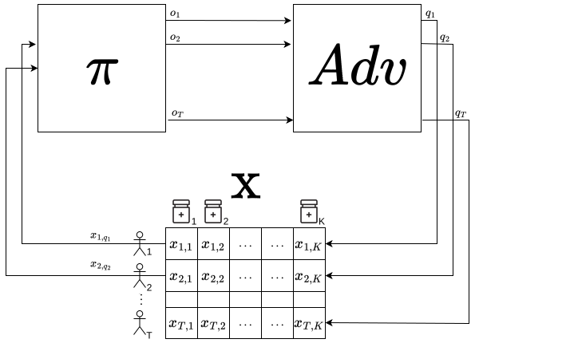
Regret lower bounds under $\epsilon$-DP
| Setting | Minimax | Problem Dependent |
|---|---|---|
| Finite-armed bandits | $\max \biggl(\frac{1}{27} \sqrt{T(K-1)}, \frac{1}{22} \frac{K-1}{\epsilon} \biggr)$ | $\sum_{a: \Delta_{a}>0} \frac{\Delta_{a}\log(T)}{ \min (d_a, \epsilon t_a) } $ |
| Linear bandits | $\max \biggl (\frac{\exp (-2)}{8} d\sqrt{T}, \frac{\exp (-1)}{4} \frac{d}{\epsilon} \biggr )$ |
$ \inf _{\alpha \in[0, \infty)^{\mathcal{A}}} \sum_{a \in \mathcal{A}} \alpha(a) \Delta_{a}\log(T) $ $\text { s.t. }\|a\|_{H_{\alpha}^{-1}}^{2} \leq 0.5 \Delta_a \min \left (\Delta_{a}, \epsilon \rho(\mathcal{A}) \right )$ |
Couplings and Group Privacy
$\rho$-zCDP
$$ \mathrm{KL}\left(M^\mathbb{P}, M^\mathbb{Q} \right) \leq \inf_{\mathcal{C} \in \Pi\left( \mathbb{P}, \mathbb{Q} \right)} \mathbb{E}_{(d, d') \sim \mathcal{C}} \left[ \mathrm{KL}\left(\mathcal{M}_d, \mathcal{M}_{d'} \right) \right] $$
If $\mathcal{M}$ is $\rho$-zCDP, then $$\mathrm{KL}(\mathcal{M}_d, \mathcal{M}_{d'}) \leq \rho d_{\mathrm{Ham}}(d, d')^2$$
Solve the transport problem
$$ \inf_{\mathcal{C} \in \Pi\left( \mathbb{P}, \mathbb{Q} \right)} \mathbb{E}_{(d, d') \sim \mathcal{C}} \left[ d^2_{\mathrm{Ham}}(d, d') \right] $$
Couplings and Total Variation
$\rho$-zCDP
For $\mathbb{P} =\bigotimes_{t = 1}^T \mathbb{P}_{t} $ and $\mathbb{Q} =\bigotimes_{t = 1}^T \mathbb{Q}_{t}$, using $\mathcal{C}_\infty(\mathbb{P}, \mathbb{Q}) \triangleq \bigotimes_{t = 1}^T c_\infty\left(\mathbb{P}_t, \mathbb{Q}_t\right)$: $$ \mathrm{KL}\left(M^\mathbb{P}, M^\mathbb{Q} \right) \leq \rho \left( \sum_{t = 1}^T \mathrm{TV}\left(\mathbb{P}_t, \mathbb{Q}_t\right) \right)^2 + \rho \sum_{t = 1}^T \mathrm{TV}\left(\mathbb{P}_t, \mathbb{Q}_t\right) \left( 1 - \mathrm{TV}\left(\mathbb{P}_t, \mathbb{Q}_t\right) \right) $$
Regret lower bounds under $\rho$-Interactive zCDP
| Minimax | |
|---|---|
| Stochastic Multi-armed bandit | $\max \biggl(\frac{1}{27} \sqrt{T(K-1)}, \frac{1}{124} \sqrt{\frac{K-1}{\rho}} \biggr)$ |
| Stochastic Linear bandit | $\max \biggl (\frac{\exp (-2)}{8} d\sqrt{T}, \frac{\exp (-2.25)}{4} \frac{d}{\sqrt{\rho}} \biggr )$ |
AdaP-KLUCB
Regret Analysis: $$ \mathrm{Reg}_{T}(\text{AdaP-KLUCB}, \nu) \leq \sum\limits_{a \colon \Delta_a > 0}\left ( \frac{C_1(\alpha) \Delta_a }{\min\{ \mathrm{kl}(\mu_a, \mu^*) , C_2 \epsilon \Delta_a\}} \log(T) + \frac{3 \alpha}{\alpha - 3} \right ) $$
Joint-DP [1]
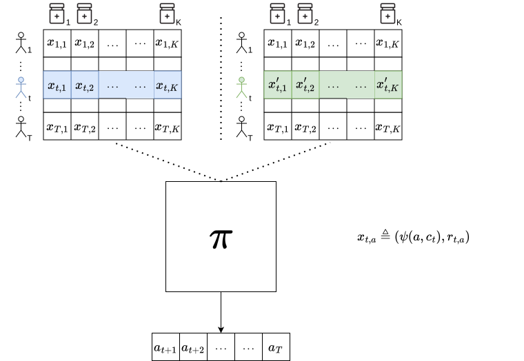
[1] R. Shariff, O. Sheffet. Differentially Private Contextual Linear Bandits (NeurIPS 2018).
Simulations
Other setting
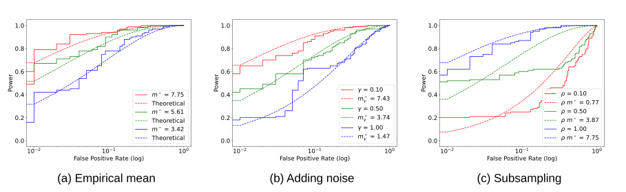